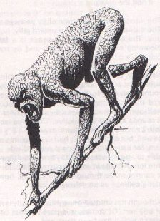

Back to page 1
The sticks in the halfling's arms were suddenly liberated by the tug of Trassgar's gravity well. As he scrambled to pick up his firewood, Tilder's thoughts raced. He tabled his gut response to Amber's query; it would have been a lie. For two years now, he had managed to avoid that question, wary of ripping open the door to his closet of dread memories. Yet to be truthful, Tilder felt only scant moral reasons for revealing his hard-won secret. He had no love for Klaxton Kurl, but he had no beef with him either. In fact, over the years and through the grapevine, he'd heard that nearly every orc of Ounze! now donned the black sash. Clumsy shiftless louts could never make anything of themselves; Tilder would have quit the gang sooner, but the orcs filled a familial niche during his formative years. How often had he dreamed of living a "normal" Trassgarian Hairfoot's life! Instead he'd spent his adolescence pilfering at village festivals and doing the orcs' dirty work. And what for? He'd learned the value of staying useful. He'd learned to ration his cursed inborn need to trust. He'd learned to parry with words instead of the blade. And he'd learned a lot about orcs....
Amber was never one to parlay with words, but now she wondered if she had been a trifle too abrupt. Tilder picked up his scattered sticks dutifully but mechanically; his face now bore the same mask of distance she'd seen in the shadows the night previous. Whoever his demons, they were relentless....
"Finty!" The particular approach Tilder had taken to the black-sasher camp was littered with brittle racknah bones. [Move silently at 35%: rolls 65%---Crack!] He cursed himself for his carelessness. Luckily, the drunken orcs were not paying that much attention. He proceeded with much more caution as he neared the mul-pine behind which his target lay. [Move silently: rolls 28%---hear that?]
Tilder looked for a spot from which to observe his prey. [Hide in shadows at 65%: rolls 88%---Finty!] One of the less inebriated orcs, one Yog by name, noticed a texture that didn't quite look like orc in the flickering light behind Bork. In fact, it looked dun and mottled....
"Heh Bork, don' so mucha move yo hamhocks!" With a drunken flourish, Yog flicked a dagger in Bork's direction to scare away what he was sure was a hungry Jak'itze. [AR: rolls 4] The poorly balanced blade flew erratically, and thudded into the ground, short of its mark, but between the startled Bork's splay legs.
"Whattha! Yo gonna pay fer dis, yo tuskless pansy!!" And Bork tried to get up. [Dex (stat roll = 10) check at -2 for being drunk: needs less than 8, rolls 9---Whoops!] Unfortunately, his bulk demanded a fulcrum with more muscle behind it than his stocky limbs could provide. He crashed back against the mul-pine amidst a shower of pinecones and wooden mead flagons. "Yo all gonna pay fer dis, yo racknah turds!" The orcs 'round the campfire snickered with mead-laced snorts. Bork was always the chump for practical jokes, and it appeared that this was just another of Yog's pranks. Amazed at the success of his "prank," Yog immediately forgot about his "Jakiran yamitze."
During the ruckus, Tilder managed to slide into a shadow [Hide in shadows: rolls 48%---see that?]. After the orcs had filled another round of mead in their well-worn flagons, Bork had settled back down on top of his sack and taken Yog's dagger as his own. Presently, he got the genuinely orcish notion to carve his initials in his prized gem. "What luck!" Tilder thought, as Bork succeeded only in dulling Yog's crude knife. But the emerald glint of fire in the elven monks' gem bored through Tilder's soul---cried out to him---and Tilder's thoughts darkened. Such a needless bloodbath. These orcs were indeed going to pay for the senseless murders. But he shook his thoughts free of revenge, and onto his present task. That gem belonged elsewhere. "In my belt pouch!" He had to show Amalthea he could pull his own weight in THoR after all she'd done in getting him the job.
"Yo knife sucks, Yogger." Bork tired of the coordination it took to hold the gem up to the dull knife. And besides, what were his initials, anyway?? He lobbed Yog's dagger into the fire, stoking up a belch of embers, and turned his attention to his empty mug. "Hey snotnoses, gimme somma dat dere brew!"
"Git it yerself, chubbs," came the chorus. Grunting and cursing, Bork rolled over on his side, got up, and plodded---actually, he was trying to saunter---over toward the barrel on the opposite side of the fire. Unfortunately [Wis (stat roll = 13) check at -4 for being drunk: needs less than 9, rolls 3] Bork took the green gem with him. Tilder cursed his oscillatory luck and wondered if 'Thea, Row and Elly had given up on him yet. Growing impatient for Bork's return, the thief turned his attention to the two orcs at Bork's right. Jop and Tarc were more reserved than the rest of the sorry lot, and seemed to be drunkenly discussing "strat," as Rowend would say. Tilder could not hear the two above the background noise the rest of the rowdy bunch made---three other orcs were singing a lewd bar-song he'd last heard from a drunken dwarf at the Crazy Wyvern---but he could see their faces, and their lips...[Read lips: needs less than 12, rolls 10---"No new taxes!"].
"Tilder, no need to overtax your brain coming up with some lie, just tell...me...the truth," Amber spoke softly, but adamantly. The thief had just finished picking up his load of kindling, and Amber's words seemed to focus his tenuous grip on reality. "I won't tell anyone where I got the information, but the location of Kurl's stronghold is of vital strategic importance to the Third House---indeed, all the aligned houses!" Tilder looked up and shook his head slowly, mournfully. He felt a familiar tug at his waist. He drew strength from the gem, his only tangible connection to his first true friends. Amber cocked her head, puzzled. "It's OK, Til...."
"No, it is not. M'Lady, I've sat on this far too long. My conscience will not allow me to hide." The thief shifted his weight, and looked around. "But I'm afraid I don't possess the information you seek...."
"You told Beer-sheba you knew where Klaxton's hiding!"
"I must not have finished my sentence---I-I was extremely tired last night. I---"
"What then?" Amber raised her voice, and lowered her grave face to Tilder's height. "How could you have possibly finished that any other way? Don't play games with me, halfling!"
Tilder stammered. "N-nn-no games...." And that nice cleric had said it wouldn't be an interrogation! He continued, "M'Lady, I know where Klaxton's hiding... hiding the Rangers of the Seventh House. You see, I was...."
Tilder stopped mid-sentence as Amber's visage underwent an amazing transformation. Perhaps she was a good judge of character, for she evidently accepted his words for the truth. How was it that she-elves could see right through him? She muttered, embarrassed, "I owe you an apology, my friend," before she bounded swiftly down the hillside toward their makeshift camp, with but half a load of wood for Gnash's cooking fire. In the setting sunlight filtering through the trees of the ancient forest, the halfling thief glanced up with a smirk and thanked Infinity, goddess of his ever-changing luck, that the she-elf had not asked how he'd come upon his secret.
As he gathered a few more dead branches to add to his kindling, Tilder's belt pouch bounced at his side as if to remind him impatiently, "You'll have to tell them some day.... some day...." And the sun finally set over the hill.
"Who would have thought, mighty Reorx," he addressed the far-off god of the forge, "that I would be here, this very night, stoking a fire to warm an elf and a halfling." He paused, and laughed, despite the fact that he was alone. "Harumph! Who from my own land would even know what a halfling were? Ah hah!"
He lay back against a nearby oak--or the Trassgar equivalent, he corrected himself, and pulled out a block of wood from his pack. Also retrieving a cutting knife, Gnash began to whittle at the wood. He had a few minutes of leisure before he had to turn the rabbit on the spit. His thoughts drifted to their quest, and his ears sifted through the crackles and pops of the fire to focus on the noise of the forest night. By the time he'd carved a considerable amount of the block into shavings (with the intention of uncovering a fine sculpting of a shadow dragon--if he could only remember if the ears pointed up or down), Amber had returned to their camp.
"Tilder's finally talking," she said, absent-mindedly. She delicately placed her bundle of sticks near the fire, and tossed a few of them into the flame.
Gnash kept carving. "Knew he would, sooner or later."
"Gnash, what have I told you about the Third House Recon?" Amber said, solemly.
"Only that you'd argued for their formation to the elders of your house. You helped to convince them of the need for a subversive group who might uncover more about Kurl than the traditional diplomatic inquiries--and not-so diplomatic skirmishes." Gnash scratched his beard. "Why, what about 'em?"
"The small reconaissance team changes membership frequently through the years. If your face becomes too well-known, the clandestine nature of their operations would be compromised." Amber tilted her head slightly, and paused, pursing her lips.
Gnash nodded in agreement, curious as to the direction Amber was taking their conversation. His shadow dragon sculpture would have to wait for another evening.
"One 'generation'--I suppose that would be the word--ended their membership involuntarily. They never returned from their last mission." The elven ranger walked over to where Gnash was sitting.
"What was their mission, Amber?" Gnash's voice took a counseling tone, and swept a spot clean of twigs and cones for Amber to sit if she wanted.
"They were sent into the Black Forest." Amber knew she didn't have to explain the gravity of that statement. "After the fall of the Seventh House's ruling seat, the other Houses wondered what happened to Jakal and her Legion of Rangers. To this day, no one knows. Almost as an afterthought, Amber declined Gnash's offer of a seat with a wave of her hand, prefering instead to cross her arms, and standing, legs slightly apart. She flicked back some of the long tendrils of hair that had blown into her face by the night wind.
"The Third House volunteered their recon group to aid in the search."
Gnash spoke again, gravely. "That was more than two years ago."
"Yes. And now, our halfling friend has brought to the surface some very painful memories." Amber turned to the direction from which she thought, surely, Tilder would soon be approaching.
"Where is the little thief, anyway?" Gnash inquired.
Tilder, having collected his kindling, was taking his time as he headed back toward an unlikely friendship between dwarf and elf. He wondered if Amber would press him for more details of his secreted knowledge of matters clearly grave to the she-elf. Having her and Gnash as allies was an unexpected benefit to his loneliness, as well as his safety as he had experienced just the night previous. However, it was also cause for trepidation. Amber seemed to be an unstable element. Gnash seemed to be unstable, too, or perhaps just not very good at being drunk. His perhaps harsh estimate of the duo was tempered by the kind, almost grandfatherly spirit of Gnash, and the beauty of the brunette elf, however, and Tilder smiled in spite of himself.
He approached more closely now the camp they had set up, and stopped. The hairs on his arms stood on end, and he had a slight panic for some unknown reason. The light from the fire flickered in his eyes, and he swallowed.
"Help me," came a voice to his left.
Turning, slowly, Tilder saw through the shadows a humanoidal form slouched against a tree about 20 feet away. "Uh... Hello? Uh, what's wrong?"
"Please, help me," the voice came again. Tilder glanced back at the camp site, and back toward the stranger in distress.
"I'll go find the little pip-squeak, if you'll turn the rabbit. Don't want it to get too burned on one side." Gnash put down his carving and knife, and rose to his feet. [Gnash's brooch changes color to reflect the change in the immediate surroundings' alignment. Does it work? Dwarven nonmagical nature causes failure 20% of the time. Roll=68%.]
Amber was about to make a smart retort to Gnash--something about the women being left to do the cooking--when she noticed Gnash's brooch reflecting the firelight, and then suddenly not reflecting it.
"Gnash, your brooch." Amber immediately withdrew her short sword.
As Gnash looked down toward the decorative brooch on his left breast mail, he saw the blackness of its color, foreboding an evil presence, he reached for his bardiche, and sprinted south toward where he thought Tilder was. Amber crouched slightly, with her back to the fire, and glanced into the surrounding darkness with squinted eyes.
Tilder stepped forward to get a better look at the stranger who had called pleadingly to him.
As he drew nearer, cautiously, he gripped the sticks of his bundle tightly. Then, he heard something brush his left ankle and looked down. Before he could react, Tilder was pulled forward then up by a rope snare that flung him ten feet off the ground. [Dex check to avoid rope snare: Needs 19 or under, unbelievably, rolls 20! Poor Tilder.]. Tilder's sticks scattered violently and he managed a halfling yelp before the air was forced from his lungs.
Bobbing in mid air by his left foot, he looked up and perceived in the shadows that the rope was affixed to a high branch another ten feet above him. He studied his chafing foot, then the swaying branch. The foliage of the tree seemed to be moving toward him along the branch. "Calm down, Whisperfoot!" he commanded himself. But his heart continued its pounding and his eyes continued their hoax. "Trees just don't move that way!"
[Initiative: Gnash 3, Amber 5, Tilder 5, humanoidal
dude 6]
In a fluid whirl that was all cape, Amber twisted skyward to confront
a sudden swishing sound. Oddly, it reminded her of the wind rushing
through the trees of her youthful forest playground. The mental image
dissolved however, when a green leafy creature with wicked looking claws
and fangs dropped from the canopy.

Gnash scrambled toward the sound of Tilder's shout and found the poor thief suspended in the air. "DOH! Hang in there, little buddy!" The burly dwarf scanned the area for heat sources, but only Tilder showed up in infravision. Maybe there was too much interference from the flickering firelight. "This ain't right!"
Amber decided it was high time for the menace in front of her to lose its head. [THACO 15, monster AC 4; needs 11, rolls 12+1 (Str bonus) OUCH! Damage, 2+1=3.] Emerald juices spewed from the creature's shoulder.
The halfling continued fumbling with the slip knot at his ankle. His not-too-shabby gut was making it hard to reach upward. "Frak, I've really gotta lose this paunch!" He uncurled and relaxed once more. The blood was flooding his head, making it hard to concentrate; He was vaguely aware of Gnash circling beneath him. Are we alone? he tried to say, but an unnatural movement from above squelched his voice with fear.
"Can you cut yerself loose, halfling?" bellowed Gnash, bardiche in hand.
One more time, Tilder crunched upwards and tried to unleash his ankle. His heart was pounding "Urgent! Urgent!" but he knew not why. [Dex check: 14] He grasped the rope with both hands and [Str check: 5] pulled some slack into the knot. That did it! The branch swished upward with the release of weight and many leaves accompanied Tilder in his descent. [Dex check for tumbling less than 10 feet: 2] The agile thief went limp in mid-air and rolled upon landing... right up to the feet of the astonished dwarf.
"Extra marks for style, thief! You good in a fight? I smell one coming." Gnash heard a distant rumble. His stomach. "This better be over before that rabbit burns!" he thought to himself.
Unscathed save for a rope burn, Tilder got his bearings, picked himself up and drew his short sword. His instincts told him to take cover in the shadows, but he stayed at the dwarf's side. Then out from those very shadows emerged a growling green humanoidal creature. By its profile, Tilder recognized it as the source of the pleading voice. It didn't appear to be in much trouble now. Rather, it appeared to be wearing a coat of leaves for camouflage and its fangs and claws glinted coldly in the dark. As the monster made its threatening approach, Gnash and Tilder heard rustling above, and another leaf-creature jumped to the ground in front of them from the branch which had just recently snagged the halfling. Even in the shadows, Tilder could tell that these walking, snarling creatures were perturbed. (Gulp!)
[Initiative: Tilder 2, Gnash 5, K1 (monster
in front of Amber) 5, Amber 6, K2 (original monster) 8, K3 (monster who
dropped) 8]
Tilder's instincts momentarily got the best of him. [Wis check 15] He scurried behind Gnash
to place the dwarf between himself and the leaf beasts. "What are
they?" he asked, trying to mask his fright. He caught himself trying
to rationalize abandoning Gnash: "Can't Gnash take these guys by
himself?"
Gnash spoke before Tilder could run, "Dunno! Never seen 'em before! But that don't stop me from introducing them to my trusty bardichy!" This buoyed Tilder's spirits, and he fought back once again his cowardly instincts. [Wis check 2]
Not one to negotiate, the dwarf attacked the first monster, [THAC0=14 vs AC 4 (K2), needs 10, 1st Attack roll=6+1 (Swish). 2nd attack roll (3 every 2 rounds) = 9+1=10 (THWACK) Damage=3+3=6. Yeah!] connecting on the second of his two swift cutting arcs. But, that only seemed to anger the creatures further.
At the campfire, Amber braced for the strange creature's counterattack. [(K1) THAC0=16 vs AC -1, needs 17, rolls 14 (claw1) 7 (claw2) 19 (bite) Chomp! Dmg=3] It lunged and feinted with its claws, then tore into her side. "I hope you choke on me, fiend!" she spat as she wrenched herself free and brought her sword slicing down toward the beast's head. [Att1 = 5+1 swish. Att2 = 14+1=15 gush! Dmg=4 to the head] The monster screamed in agony a surprisingly human-like scream!
With a stereo howl, the vicious and agile creatures leaped in concert at Gnash. "Come and get me you slime suckers!" the dwarf raged with blood boiling and eyes bulging. That, they did. With a combined attack [(K2) THAC0 15 vs AC 7, needs 8. Claw1=3, claw2=12, bite=3. (gulp) Dmg=4 to the head! (K3) THAC0 15: claw1=10, c2=12, b=17 (ouch cubed!) Dmg=16!], the duo of monstrous, leaf-scaled creatures tore through Gnash's armor with claw and snapping jowls. Gnash's crimson blood stained the slightly damp forest floor, although the dwarf seemed to take the blows in stride.
[Initiative: Amber=1, Gnash=1, K1=6, K2=6,
K3=7, Tilder 8]
"Welcome to hell, beasties!" Amber yelled while swinging her sword,
but it swooshed to the left. [AR=6+1=7]
"Frak," the ranger muttered to herself, borrowing one of her
off-worlder friend's phrases.
Half a minute away, Gnash flourished his bardiche menacingly, in preparation for his attack, but [AR=1] the polearm slipped from his hands and landed with a thud out of arms reach! "ARUURGGTH!"
Tilder couldn't believe their bad luck. Gnash just looked at his hands and cursed in Krynnian Dwarvish.
Back at the campfire, Amber's opponent had already leapt underneath her swing and chomped a chunk out of her left leg. [(K1) AR 13 (swish), 15 (swish), 17 (crunch) Dmg=6] "There goes that pair of hose!" she mourned, wincing.
When the stout one dropped his polearm, the leaf-covered beasts tried to manuever around to get at the easier prey, who was cowering behind his protective companion. [50% chance to double around back while Gnash retrieves his weapon: K2=73%, K3=19%] The first of their opponents decided against it and attacked Gnash again: [(K2) AR=15, 20, 19. Dmg=4 + 5x2 (double damage on 20) + 2 = 16!]. "AUUUUGHG!!"
The second monster only made it half-way around Gnash before the dwarf stuck out his leg [Dex check=1] in an attempt to trip the beast. The "leaf bag," or so Tilder so named it, merely charged around it [(K3) Dex check=10], but the extra second around Gnash's foot left no time for an attack on Tilder.
"Thanks, Gnash!" Tilder shouted, crouching to dodge the oncoming beast.
"No problem, short stuff!" Gnash spoke, without remembering that he wasn't much taller. He spied his bardiche a few armlengths away and sighed.
[Initiative: K2=1, K3=1, Amber=2, Gnash=3,
Tilder=4, K1=8]
Thinking he could finish the clumsy dwarf, the first savage attacked
Gnash before he could draw another weapon. [(K2)
AR=20, 16, 7. Dmg=1*2 + 2 + whish = 4].
The other beast lunged with his claws at Tilder. [(K3) THAC0 15 vs AC 4 needs 11. AR 18, 1 (drops claws!), 9. Dmg=1 to Tilder's side] "Ow!" The scrape was just a flesh wound, but it stung like a blasted stirge bite. "So this is what I get for not eating my salad!" he thought, as he heard shouts of agony northward toward the campfire.
"You ripped my hose!" came Amber's clenched-teeth proclamation. "I'm going to make my next pair out of you!" she swore, swinging her sword. [AR 17+1, 20+1. Dmg=(1+1) + (4+1)x2 = 12] The creature of leafy flesh and blood staggered backwards with the force of the fiesty elf's twin blows. "Auguhwhwhwhwh!"
Smarting with pain, and bleeding in more places than he cared to count, Gnash whipped out his dagger and gave it a good solid thrust. [AR 9+1 (str). SMASH (barely!) Dmg=4+5=9 (str)]. "Take that salad face!" grimaced the dwarf, as he twisted the blade deep and out from the monster's torso.
There's nothing like the first wound in a battle to catalyze one's courage. This leaf dude was going to be toast. But that had to wait. [Wis check: 8] Ignoring the pain in his side, Tilder looked momentarily for a way to help Gnash, who was taking quite a beating. Luckily, a firing lane opened up, and the halfling whipped out his dagger and launched it at the dwarf's foe. [THACO16 (missile) vs AC 4 (K2), needs 12. AR 14. (Thud!) Dmg=4 to right arm] Both creatures balked momentarily at the astonishing bravery of what should have been their easiest prey.
Meanwhile, back at the camp.... [(K1) morale check: base=50%, bleeding badly, add 10%. Rolls 78%, decides for one more go: AR 11, 20 (ouch!), 14. Dmg=2*2=4 to left leg again.] "Dammit, nail polish won't take care of that now!" On some subconscious level, Amber was sad that her mid-battle invectives were out of earshot of her burly friend.
[Initiative: Amber=4, Gnash=4, K2=5, Tilder=6,
K3=9, K1=10]
Taking advantage of the surprise attack by Tilder, Gnash tackled the
beast head-first. [AR 10+1(str). (Smash!)
Dmg=3+5 (str)=8] The single horn of Gnash's ogre magi helmet impaled
the veggie monster in the gut and momentum threw both dwarf and foe to
the ground, rolling. Yanking his helmet free, Gnash struggled to
find the creature's neck amidst the flurry of thrashing leaves. As his fingers
reached for what surely would be the neck of the well-camoflauged creature,
he was surprised to find that the leafy surface was shallow, and that a taut
skin was hidden underneath.
The she-elf took another mighty hack at her opponent. The leaf monster screamed. [AR=18. (Thwack!) Dmg=5+1=6] It slumped, abruptly silenced. "That'll teach you to mess with a lady's pantyhose," Amber said with a kick for assurance. She bolted for the sounds of battle not far ahead and hoped she was not too late.
After rolling a short arm's length to stop at the foot of a mul-pine, Gnash and the leaf monster were locked in deadly throat throttles. [(K2) AR=17, 13, 16. (ouch ouch ouch!) Dmg=10] "AUUGGH!" Gnash's scream was echoed by a terrible gurgly death cry northward.
At Gnash's desperate roar, Tilder dodged left and took a swipe at the struggling foes. He had to help Gnash before he got killed! [THAC0 20 vs AC 4(K2), needs 16: AR=8 (swish!)]
"Finty!" Tilder choked, as the leaf monster followed his dodge and clawed him. [(K3) AR=7, 17, 9. Dmg=2 (right side)] "Frak, Finty, gimme a break!"
[Initiative: K2=2, Gnash=6, Tilder=8, Amber=8,
K3=9]
Gnash had his foe pinned against the base of the large mul-pine,
and it wasn't going anywhere fast. [(K2)
morale check: 88%] It tried to claw at Gnash again.
[(K2) AR=10, 20, 12. Dmg=1+1*2+2=5]
"You slimy mold-head! Get your fangs outta my neck!" Gnash bellowed, wincing.
Tilder kept dodging the leaf beast as best he could until.... "Bet a little blood'll make you stick out a little more in the woods!!" Amber intervened between the two, brandishing her long sword with murder in her eyes!
With the she-elf blocking the fanged creature's access to the thief, Tilder yelped joyfully at Finty's capriciousness. "Great! It's Amber! Hold 'im Gnash! I'll stick him!" As the she-elf brought her sword to bear upon the astonished leaf creature's neck, Tilder thrust his short sword at the other vegetable mass before it clawed Gnash to bloody shreds. [(Tilder) Dex check to miss Gnash: 5. AR=20. Dmg=3*2=6] Tilder found an opening; metal met writhing vegetation and flesh with a sickening hack that sent the leaf beast to the Great Big Tree In The SkyTM.
At nearly the same moment, Amber's blade connected as well. [THAC0 15 vs AC 4 (K3) needs 11. AR=17, 12 (double thwack!). Dmg=(7+1)+(1+1)=10] The wounded creature howled with pain and a bit of desperation, as it watched Gnash discard its limp comrade.
The remaining monster weighed its options... [Morale check at 25%. Rolls 37%] ...and decided to bolt for the nearest tree. Tilder shouted excitedly, "Yeah, make like a tree an' leave!" It jumped straight upwards, but failed to grab a single branch! [Dex check=18]
[Initiative: Tilder=5, Amber=6, Gnash=7, K3=8] The monster was going to make a break for the deep woods, but Tilder thought that wouldn't be any fun, so he dropped his sword and tackled the beast. [Dex check for unarmed tumble=4. THAC0 20 vs AC 4 needs 16. AR=15+2 (successful tumble). Str check to knock over=8] To their disbelief, Gnash and Amber watched as their little thief grabbed the monster's left leg and rolled; the momentum of his rush and a little expertly applied leverage were more than enough to topple the veggie to the forest floor, and just enough to produce upon impact an awful cracking noise which permeated the forest air for a second. [Dmg=4, broken kneecap]
Without a second's delay, the tag team attacked. [(Amber) AR=3 (swoosh)] Tilder scrambled out of the way just as Amber's sword sliced through the air where he'd been. Grumbling and grunting as he picked himself up, Gnash made it over to his bardiche and hurled it over the halfling's head. "Geez, guys, careful!" Tilder exclaimed, dodging the flying polearm. [(Gnash) Dex check 13. AR=15. Shlick! Dmg=1+5+5=11] Normally, long pole-arms were not meant for aerial attacks, but the dwarf's trusty air-borne weapon found it's mark, imbedding itself up to the hilt in living, leafy carapace. The creature tried to get up, then collapsed, stirring its last.
Tilder and Amber rushed to Gnash's aid, as he more resembled a blood sausage than a Krynn Mountain Dwarf. The hefty fighter shooed them away with one of his Toothy GrinsTM. He was going to be OK, he said, leaning on his bardiche covered with the blood of the now defeated yet still unidentified assailants. Just had to catch a breath. Suddenly, he grasped Amber's forearm and pulled her face lower. "Amber!" The she-elf looked perplexed, but Tilder noticed a smirk creeping across her countenance.
"Pray tell, what is it, dearie?"
Gnash furrowed his bushy brow for a moment, but continued. "My rabbit! Tell me you took it off the fire!!"
Gnash's adventure will continue on Gnash's page while Tilder and Amber's story continues on page 3 of The Vortex Quest.